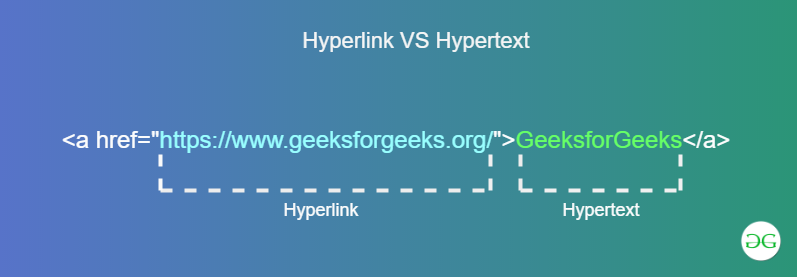
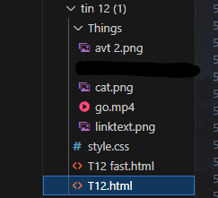
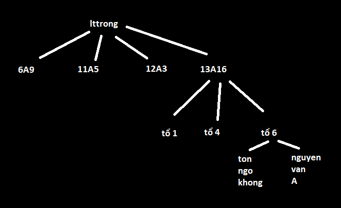

<p> Đây Là Chữ Bình Thường </p> : Đây Là Chữ Bình Thường
<p> Đây Là <b> Chữ In Đậm </b> </p> : Đây Là Chữ In Đậm
Có thể dùng strong thay thế cho b
<p> Đây Là <i> Chữ In Nghiêng </i> </p> : Đây Là Chữ In Nghiêng
Có thể dùng em thay thế cho i ; i viết tắt cho ins
<p> Đây Là <u> Chữ Gạch Chân </u> </p> : Đây Là Chữ Gạch Chân
<p> Đây Là <mark> Chữ Được Đánh Dấu </mark> </p> : Đây Là Chữ Được Đánh Dấu
<p> Đây Là <small> Chữ Nhỏ </small> </p> : Đây Là Chữ Nhỏ
<p> Đây Là <sup> Chỉ Số Trên </sup> </p> : Đây Là Chỉ Số Trên
<p> Đây Là <sub> Chỉ Số Dưới </sup> </p> : Đây Là Chỉ Số Dưới
<p> Đây Là <del> Chữ Bị Gạch Đi </del> </p> : Đây Là Chữ Bị Gạch Đi
<p> <center>Đây Là Chữ Được Căn Giữa</center></p> :
Đây Là Chữ Được Căn Giữa
<pre>Văn Bản Giữ Nguyên Định Dạng.
Không Cần Dùng Thẻ <br> Để Xuống Dòng .
</pre>
Văn Bản Giữ Nguyên Định Dạng.
Không Cần Dùng Thẻ <br> Để Xuống Dòng
b. Định Dạng Phông Chữ
Màu Sắc
<p style="color:red" >1234</p>
1234
Phông Chữ
<p style="font-family:Arial" >1234</p>
1234 abcd (Arial)
1234 abcd (Times new roman)
Cỡ Chữ
<p style="font-size:40px" >1234</p>
1234
Bài 9
I. Tạo Danh Sách
a. Danh Sách Có/Ko Có Thứ Tự
Thẻ <li> Đóng Vai Trò Là "Danh Mục" Trong Danh Sách .
Thẻ <ol> Có Tác Dụng Tạo Danh Sách Có Thứ Tự
Câu Lệnh : <ol Thuộc Tính = "Giá Trị" > Nội Dung Cần Liệt Kê</ol>
<ol> Khi Không Có Thuộc Tính Sẽ Mặc Định Là (type = "1" )
- type: Xác Định Kiểu Đánh Số Gồm Các Kiểu ("1" , "A" , "a" , "I" , "i")
* Lưu Ý Nhỏ : Khi Điền Các Giá Trị Khác ("1" , "A" , "a" , "I" , "i") Như ("0.1" , "-2" , "B" , "ab" , "II" ...) Thì Type Sẽ Mặc Định Là ="1"
- start : Xác Định Giá Trị Đánh Số , Nhận Giá Trị Số Nguyên
* Lưu Ý Nhỏ :
Khi Điền Các Giá Trị Khác Như ("A" , "u23" , ...) Thì Giá Trị Sẽ Mặc Định Là "1"
Nếu Điền Số Nguyên Trước Và Điền Chữ/Kí Hiệu Đặc Biệt Ở Sau Thì Tuy Sai Về Mặt Lý Thuyết Nhưng Start Vẫn Lấy Giá Trị Số Nguyên Đằng Trước ("15cm" Lấy "15" , "5 Điểm Là Nhiều" Lấy "5" , "1 2A4hiphopneverdie" Lấy "1","7.94" Lấy "7")
Thẻ <ul> Có Tác Dụng Tạo Danh Sách Không Có Thứ Tự .
Câu Lệnh : <ul style = "list-style-type : Giá Trị " > Nội Dung Cần Liệt Kê </ul>
<ul> Khi Không Có Thuộc Tính Sẽ Mặc Định Là (type = "list-style-type : disc " )
Với Giá Trị Là
Siêu Liên Kết (Hyperlink) Là Đường Dẫn Tài Liệu Mà Người Đọc Có Thể Bấm Vào Đó Để Đi Đến 1 Bài Viết Hay Một Vùng Nào Đó Trên Website. Ví Dụ : https://www.youtube.com/watch?v=19y8YTbvri8
Siêu Văn Bản (Hypertext) Cũng Là Một Đường Dẫn Tài Liệu Nhưng Có Kèm Theo Văn Bản Giúp Người Đọc Biết Trước Về Đường Dẫn Mình Sẽ Bấm Vào . Ví Dụ : Đường Dẫn Tới Nhạc Chủ Web Thích

Trong HTML , Thẻ <a> Được Sử Dụng Cho Các Liên Kết Với Cấu Trúc Chung :
<a
href ="URL"target ="Nơi Chuyển Đến" >Nội Dung Hiển Thị Tại Vị Trí Đặt Liên Kết</a>
Trong Đó :
href : Dùng Để Xác Định Đường Dẫn Đến Tài Liệu Mà Bạn Muốn Chuyển Tới.
(Đường Dẫn Ở Đây Có Thể Là Đường Dẫn Tuyệt Đối Hoặc Đường Dẫn Tương Đối)
URL Là Địa Chỉ (Đường Dẫn) Dẫn Tới Tài Liệu/Trang Web Được Liên Kết
target : Chỉ Định Nơi Sẽ Mở Tài Liệu/Trang Web , Cụ Thể
_self : Tài Liệu/Trang Web Được Mở Ngay Trên Cửa Sổ Hiện Tại
_blank : Tài Liệu/Trang Web Được Mở Trên Cửa Sổ Mới
Có 2 Loại URL Chính : Đường Dẫn Tuyệt Đối Và Đường Dẫn Tương Đối
Đường Dẫn Tuyệt Đối
Đường Dẫn Tương Đối
Khái Niệm
Là Một Chuỗi Đầy Đủ Bao Gổm Giao Thức (http:// Hoặc https://), Tên Miền (Domain Name) Và Tên Đường Dẫn Tài Liệu (Nếu Cần) .
Là Một Phần Nhỏ Của Đường Dẫn Tuyệt Đối , Thông Thường Đường Dẫn Tương Đối Là Phần Đường Dẫn Đến Tài Liệu
Ví Dụ
href= "https://vi.wikipedia.org/wiki/John_Wick". Đôi Khi Đường Dẫn Tuyệt ĐốiRất Dài Và Khó Nhìn, Ta Vẫn Cần Để Một Cách Chính Xác
Với Cấu Trúc Website Như Hình, Nếu Ta Đang Ở T12.html Thì Liên Kết href="Things/ cat.png"
Là Đường Dẫn Tương Đối Tới Tệp Tin cat.png Trong Thư Mục Things Hay href="T12 fast.html" Là
Đường Dẫn Tương Đối Tới Tệp Tin T12 fast.html , Thư Mục Things Và Tệp Tin T12 fast.html Nằm Trong Vùng Thư Mục Cha Với T12.html .

Cách Dùng
Khi Sử Dụng Liên Kết Trên Mạng Internet (Mà Tài Liệu Không Nằm Trên Máy Chủ Của Mình), Ta Cần Phải Sử Dụng Đường Dẫn Tuyệt Đối
Đường Dẫn Tương Đối Được Sử Dụng Khi Liên Kết Tới Một Tài Liệu Khác Trên Cùng Trang Web
(Cùng Máy Chủ Hoặc Máy Tính Cài Đặt Trang Web), Nó Không Yêu Cầu Giao Thức Hay Tên Miền, Mà Chỉ Cần Tên Đường Dẫn.
Cách Hiểu 1 : Khi Ta Thêm Liên Kết Trang Web [B] (Có Tên Miền) Trùng Với Trang Web [A] Hiện Tại Nhưng khác Đường Dẫn Tài Liệu, Liên Kết Đó Được Gọi Là Liên Kết Trong
Cách Hiểu 2 : Bài Viết Của Bạn Trỏ Đến Một Bài Viết Trong Cùng Domain Của Bạn , Một Bài Viết Ấy Là Liên Kết Trong.
Để Tạo Liên Kết Trong , Ta Dùng Thẻ <a> Và Truyền Đường Dẫn Tương Đối Cho Thuộc Tính href . Lúc Này Vì Đường Dẫn Không Có Giao Thức Ở Đầu Nên Trình Duyệt Sẽ Kiểm Tra Liên Kết Đó Có Trên Máy Chủ Hiện Tại Không . Có Thì Vô Không Thì Chơi Khủng Long Nhảy Xương Rồng
(Hầu Hết Có Trong SGK Rồi Nên Ở Đây Tấu Hài Thôi , Người Nghiêm Tút Đi Đi >w<)
Giả Sử Cấu Trúc Link Web Sẽ Được Ví Như Trường Học - Lớp Học - Tổ - Thành Viên ... Trong Đó Trường Học lttrong Là Trang Chủ (Mô Phỏng Thôi Căng Làm Gì)

Ví Dụ Điển Hình Để Gặp Idol : <a href="13A6/Tổ 6/ton ngo khong">Tôn Ngộ 0</a>
Kết Quả : Tôn Ngộ 0 (Link Ko Có Thật Nên Đừng Vô Làm Gì - .... .. . - / .- / -... .- -. / - --- ..)
b1. Liên Kết Tới Trang Web Cùng Thư Mục
Từ Lớp 13A16 Có Thể Truy Cập Các Liên Kết Cùng Thư Mục Như Các Lớp 6A9 , 11A5 , ... Hoặc Từ Tổ 6 Có Thể Truy Cập Các Liên Kết Cùng Thư Mục Như Các Tổ 1 , Tổ III blaaaaaaaa
Now Here Me Out : Giờ Hiện Tại Bạn Đang Ở 10A1 (lttrong/10A1)
Cú Pháp Để Vô Lớp Học 11A5(Vì Bạn Muốn Gặp Idol) :
<a href="lttrong/11A5">Lớp 11A5</a>
Kết Quả : Lớp 11A5
b2. Liên Kết Tới Trang Web Thuộc Thư Mục Khác , Dưới Một Cấp
Lớp Học Hạ 1 Bậc Sẽ Là Gì Nào ? Đúng Rồi Đấy , Các Tổ(Kiến Lửa)
Thế Tổ Dưới 1 Cấp Là Gì Nhỉ Các Cô Cậu ??? Ah Yes That's Right Nó Là Tên Các Thành Viên
Ví Dụ Bạn Hiện Tại Đã Vào 11A5 Cách Để Vô Tổ Nào Đó (Tổ 2) :
<a href="lttrong/11A5/Tổ 2">Tổ 2 Lớp 11A5</a> Kết Quả : Tổ 2 Lớp 11A5
b3. Liên Kết Tới Trang Web Thuộc Thư Mục Khác , Dưới Hai (Hay Nhiều) Cấp
Nào Các Cô Bé , Ví Dụ b2 Đủ Hiểu Rồi Cần Gì Daddy Đưa Thêm Ví Dụ Chứ
b4. Liên Kết Tới Vị Trí Khác Trong Cùng Trang Web
Như Cách Fan MU Từ Trong Hang Lên Đỉnh Xã Hội Và Ngược Lại
Giải Thích Cho Các Em Bé Hiếu Học : Bé Đang Ở Điểm A Và Muốn Dịch Chuyển Đến B
Tại Điểm A : <ahref = "#Tên ID "> Mô Tả Điểm B </a>
Tại Điểm B : <Tên Thẻ ... id = "Tên ID "> Nội Dung </Tên Thẻ>
(Ngắn Gọn Dễ Hiểu Hơn Thì Cứ Thêm id = "Tên ID" Vào Nơi Muốn Dịch Chuyển Là OK )
Ví Dụ : Điểm A : Teleport Về Phần b <a href="#len">Teleport Về Phần b</a>
b5. Tạo Liên Kết Cho Hình Ảnh
Là Nhấn Vô Ảnh Để Vào Web Nào Đó ( ͡° ͜ʖ ͡° )
<ahref = "Thông Tin "> <imgsrc = "Đường Dẫn Tới Tập Tin Ảnh">
</a>
Để Có Thể Hiển Thị Trên Web , Các Tệp Ảnh Cần Được Định Dạng Là 1 Trong Những Loại Được Trình Duyệt Web Hỗ Trợ .Các Thẻ Định Dạng Thường Dùng :
Tier List
Định Dạng
Loại Định Dạng
A Tier
PNG , JPEG Hoặc GIF
Phổ Biến
B Tier
JPEG-XR Hoặc WebP
Một Số Định Dạng Mới x Phổ Biến
(Thầy Cô Thích Ra Cái Này) Tier
TIFF Hoặc EPS ,...
Các Định Dạng Này Cần Được Chuyển Đổi Sang Định Dạng Được Hỗ Trợ Ở 2 Nhóm Trên
Thẻ <img> Là Thẻ Đơn
(Thẻ Đơn Là Thẻ Không Cần Có </Tên Thẻ> Ở Đuôi )
Dùng Để Thêm hÌnH ảNh Vào Trang Web . Khi Thấy <img> , Trình Duyệt Sẽ Hiểu Rằng Nó Cần Phải Đặt 1 Bức Ảnh Tại Đây Nếu Không Chủ Web Sẽ Xử Nó . <img> Có Thể Được Chèn Ngay Vào Giữa Văn Bản Mà Không Sợ Bị Ngắt Dòng (Trừ Khi Ảnh Bạn To Như Tỉ Lệ Rớt Tốt Nghiệp)
Với Thẻ <img> , Trình Duyệt Sẽ Phải Xử Lý Ảnh Trước Khi Hiển Thị Trên Web Nên Ta Cần Phải Để Tâm Đến Dung Lượng Của Ảnh Trước Khi Chèn Vào Vì Nếu Ảnh Đó Có Dung Lượng Như GI Cùng Với Cái Mạng Bị Cá Mụp Cắn Thì Thứ Đang Đến Với Bạn Chỉ Là Cái Lưng 75 Tuổi Thôi .
Các Thuộc Tính Của Thẻ <img> Gồm
Thuộc Tính src : Bắt Buộc Phải Có , Để Chỉ Đường Dẫn Tới Tệp Ảnh
Thuộc Tính alt : Được Sử Dụng Kèm Nhằm Cung Cấp văn Bản Thay Thế Khi Việc Hiển Thị Ảnh Bị Lỗi Vì Đó Là 1 Ngày Đẹp Trời Để Cá Mụp Cắn Cáp . Văn Bản Thay Thế Giúp Người Đọc/Người Xem Hình Dung Ra Nội Dung Bức Ảnh
Ví Dụ
Result
I Want To Say <imgsrc ="Things/no.jpg" style="width: 100px;"> So Go Away ;)
(Đây Là Trường Hợp Ảnh Lỗi/Điền Sai Tên Hoặc Web Hết Load)
2. Chèn Âm Thanh Và Video Vào Trang Web
Thẻ <video> Và Thẻ <audio> Dùng Để Chèn vIdEo Hoặc âM tHaNh Vào Trang Web.
<video Thuộc Tính ="Giá Trị Thuộc Tính"></video> <audio Thuộc Tính ="Giá Trị Thuộc Tính"></audio>
2 Thẻ Này Được Hỗ Trợ Trong Hầu Hết Các Trình Duyệt , Tuy Nhiên Định Dạng Của Các Tệp Tin Đa Phương Tiện Thì Không Nghĩ Thế Có Thể Sử Dụng Vẫn Phụ Thuộc Vào Trình Duyệt.
Định Dạnh Phổ Biến Của Video : mp4 , webm . mp4 Chạy Được Trực Tiếp Hầu Hết Các Trình Duyệt .
Định Dạnh Phổ Biến Của Âm Thanh : mp3 , wav Và ogg Được Hỗ Trợ Bởi Hầu Hết Trình Duyệt Hiện Tại
Tương Tự Như <img> , Thẻ <video> Cũng Có Các Thuộc Tính Cơ Bản Như src , width , height. Ngoài Ra Còn Có Các Thuộc Tính Khác Như :
controls : Là Thuộc Tính Boolean Boolean Là Kiểu Dữ Liệu Có 2 Giá Trị True/False, Không Cần Có Giá Trị Thuộc Tính,
Để Trình Duyệt Hiển Thị Các Thành Phần Điều Khiển Như Nút Phát / Tạm Dừng, Điều Khiển Âm Lượng...
Thuộc Tính Này Nên Được Sử Dụng Để Người Truy Cập Có Thể Điều Khiến Trong Quá Trình Phát Tập Tin Đa Phương Tiện.
autoplay : Là Thuộc Tính Boolean, Không Cần Có Giá Trị Thuộc Tính,
Cho Phép Trình Duyệt Chạy Video Ngay Khi Hiển Thị. Tuy Nhiên, Một Số Trình Duyệt Như Google Chrome Thường
Không Cho Video Chạy Ngay Khi Hiển Thị Hoặc Có Thể Chạy Ngay Khi Hiển Thị Nếu Có Thuộc Tính muted - Không Phát Tiếng.
poster : Cung Cấp Đường Dẫn Đến Tập Ảnh, Dùng Để Hiển Thị Khi Chưa Chạy Video. (a.k.a Thumbnail Của Video)
Thẻ <audio> Không Có Thuộc Tính width, height Và poster Nhưng Vẫn Có controls Và autoplay
Trong Trường Hợp Có Nhiều Video Hoặc Nhiều Tệp Âm Thanh Tương Ứng Với Các Định Dạng Khác Nhau, Ta Có Thể Sử Dụng Thẻ <source> Trong Cặp Thẻ <video> Hay <audio> Để Chỉ Định Các Loại Định Dạng Khác Nhau. Trình Duyệt Sẽ Tự Động Tìm Và Hiển Thị Tệp Tin Với Định Dạng Khác Nhau Mà Nó Hỗ Trợ
Hold Up , LetMeExplain :
Nếu Trong 4 Web A ; B ; C ; D Đều Có Tệp Văn Bản Như Này :
<video controls>
<source src="videos/phim_heo_papa.mp4"> (1)
<source src="videos/phim_heo_papa.webm"> (2)
<source src="videos/phim_heo_papa.ogg"> (3)
</video>
Bạn Vô Trang A , Web Hỗ Trợ mp4 , Bạn Xem Thoải Mái [Nó Sẽ Skip (2) Và (3)].
Bạn Vô Trang B , Web Không Còn Hỗ Trợ mp4 Nhưng Có Hỗ Trợ webm , Bạn Xem Thoải Mái [Nó Sẽ Skip (3)].
Bạn Vô Trang C , Web Không Còn Hỗ Trợ mp4 Và webm Nhưng Có Hỗ Trợ ogg , Vô Tư Bạn Ey.
Bạn Vô Trang D , Web Không Còn Hỗ Trợ Cả 3 Cái ? Xem Phim Khác Đi . You're Welcome.
Thắc Mắc Vì Sao Sách Không Có Thuộc Tính type À ? ...- .. / - .... ..- --- -.-. / - .. -. .... / - -.-- .--. . / -. --- / .-. .- - / .-.. .- / ...- --- / -.. ..- -. --.
ftmo ymo ftu og xqz ymzs pu xyma (12)
3. Tạo Khung Nội Tuyến Trong Trang Web
Thẻ <iframe> Dùng Để Nhúng 1 Nội Dung/Trang Web Khác Vào Trong Trang Web Hiện Tại.
Cú Pháp : <iframe src="Đường Dẫn" width="Chiều Rộng" height="Chiều Cao"></iframe>

 (Đây Là Trường Hợp Ảnh Lỗi/Điền Sai Tên Hoặc Web Hết Load)
(Đây Là Trường Hợp Ảnh Lỗi/Điền Sai Tên Hoặc Web Hết Load)